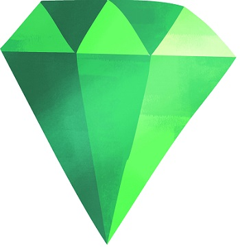

Чернечий діамант - це рідкісна коштовність.
Професор Бейрстоун і доктор Дей відшукали Чернечий діамант.
Чернечий діамант оцінюють у суму понад 10 мільйонів фунтів.
Професор Бейрстоун і доктор Дей зробили сенсанційне відкриття.
Віддаленій печері Аляски відшукали Чернечий діамант.
Професор Бейрстоун є провідним дослідником.
Доктор Дей - учена, що вивчає скам`янілості.
У віддаленій печері Аляски вони відшукали Чернечий діамант.
Чернечий діамант було знайдено на Алясці.
Відшукав коштовний камінь Ернест, собака професора Бейрстоуна.
Професор Бейрстоун потай надіслав нам цю світлину Чернечого діаманта:
Перша спільна експедиція професора Бейрстоуна і доктора Дей.
Ось світлина їхньої групи:

Вік Чернечого діаманта становить понад мільярд років.
Камінь має рідкісний зелений колір.
Вагою в 300 каратів, він коштує щонайменше 10 мільйонів фунтів.